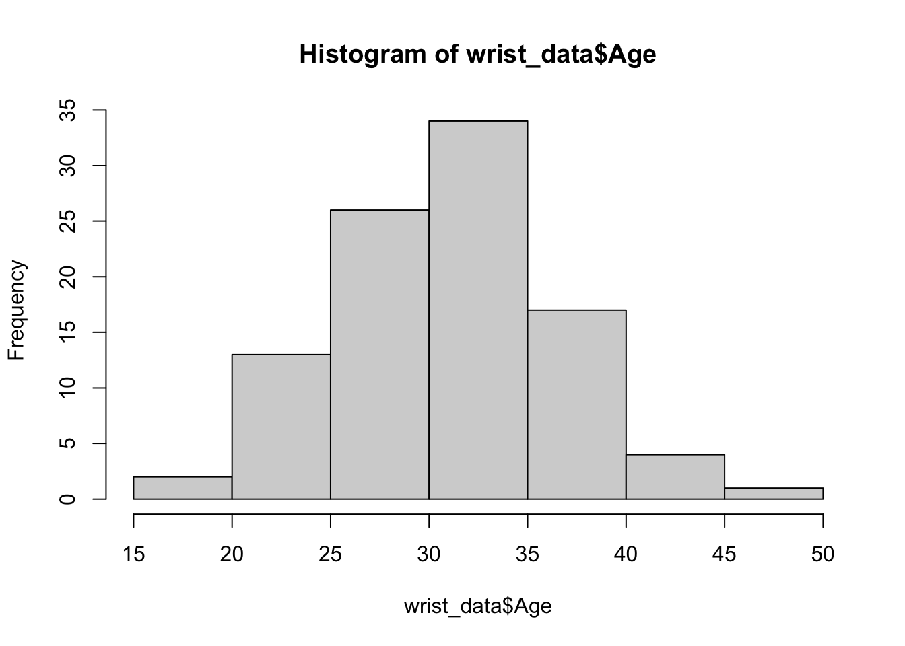
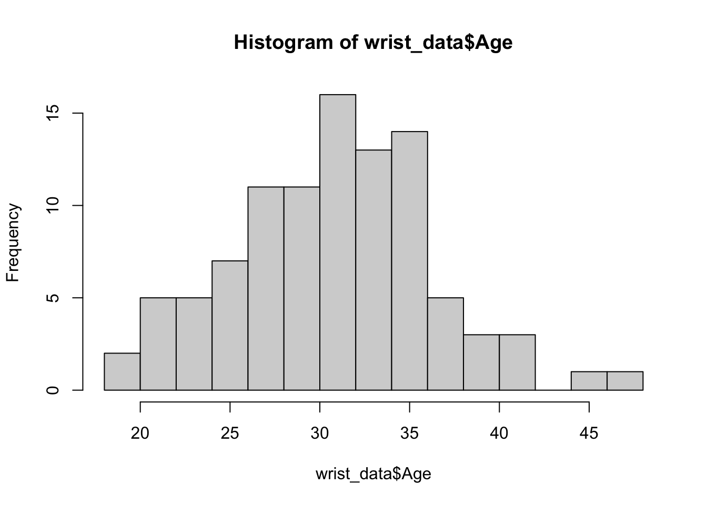
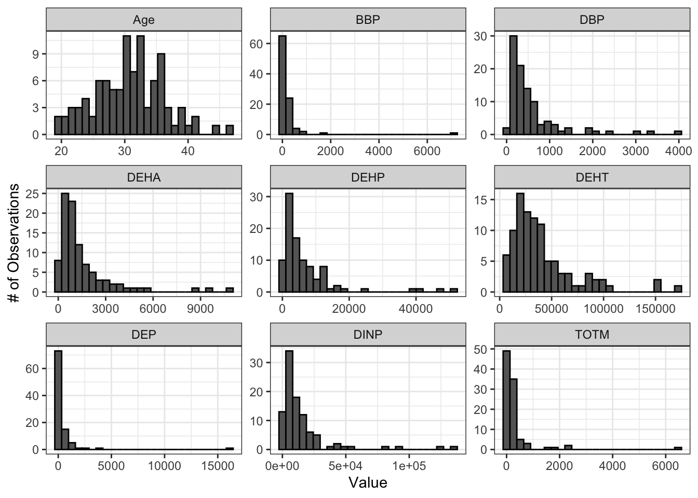
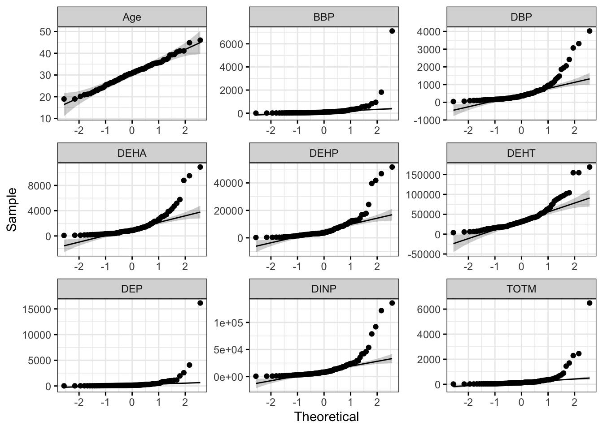
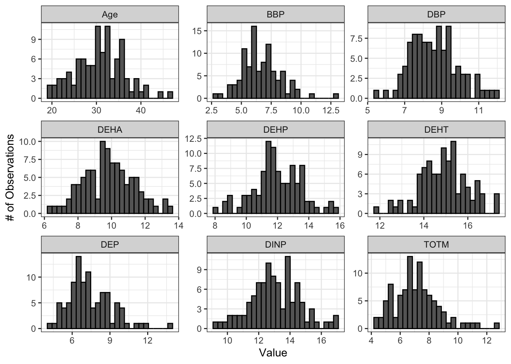

Normality Tests and Data Transformations
This training module was developed by Elise Hickman, Alexis Payton, and Julia E. Rager.
All input files (script, data, and figures) can be downloaded from the UNC-SRP TAME2 GitHub website.
Introduction to Training Module
When selecting the appropriate statistical tests to evaluate potential trends in your data, selection often relies upon whether or not underlying data are normally distributed. Many statistical tests and methods that are commonly implemented in exposure science, toxicology, and environmental health research rely on assumptions of normality. Applying a statistical test intended for data with a specific distribution when your data do not fit within that distribution can generate unreliable results, with the potential for false positive and false negative findings. Thus, one of the most common statistical tests to perform at the beginning of an analysis is a test for normality.
In this training module, we will:
- Review the normal distribution and why it is important
- Demonstrate how to test whether your variable distributions are normal…
- Qualitatively, with histograms and Q-Q plots
- Quantitatively, with the Shapiro-Wilk test
- Discuss data transformation approaches
- Demonstrate log2 data transformation for non-normal data
- Discuss additional considerations related to normality
We will demonstrate normality assessment using example data derived from a study in which chemical exposure profiles were collected across study participants through silicone wristbands. This exposure monitoring technique has been described through previous publications, including the following examples:
O’Connell SG, Kincl LD, Anderson KA. Silicone wristbands as personal passive samplers. Environ Sci Technol. 2014 Mar 18;48(6):3327-35. doi: 10.1021/es405022f. Epub 2014 Feb 26. PMID: 24548134; PMCID: PMC3962070.
Kile ML, Scott RP, O’Connell SG, Lipscomb S, MacDonald M, McClelland M, Anderson KA. Using silicone wristbands to evaluate preschool children’s exposure to flame retardants. Environ Res. 2016 May;147:365-72. doi: 10.1016/j.envres.2016.02.034. Epub 2016 Mar 3. PMID: 26945619; PMCID: PMC4821754.
Hammel SC, Hoffman K, Phillips AL, Levasseur JL, Lorenzo AM, Webster TF, Stapleton HM. Comparing the Use of Silicone Wristbands, Hand Wipes, And Dust to Evaluate Children’s Exposure to Flame Retardants and Plasticizers. Environ Sci Technol. 2020 Apr 7;54(7):4484-4494. doi: 10.1021/acs.est.9b07909. Epub 2020 Mar 11. PMID: 32122123; PMCID: PMC7430043.
Levasseur JL, Hammel SC, Hoffman K, Phillips AL, Zhang S, Ye X, Calafat AM, Webster TF, Stapleton HM. Young children’s exposure to phenols in the home: Associations between house dust, hand wipes, silicone wristbands, and urinary biomarkers. Environ Int. 2021 Feb;147:106317. doi: 10.1016/j.envint.2020.106317. Epub 2020 Dec 17. PMID: 33341585; PMCID: PMC7856225.
In the current example dataset, chemical exposure profiles were obtained from the analysis of silicone wristbands worn by 97 participants for one week. Chemical concentrations on the wristbands were measured with gas chromatography mass spectrometry. The subset of chemical data used in this training module are all phthalates, a group of chemicals used primarily in plastic products to increase flexibility and durability.
Script Preparations
Installing required R packages
If you already have these packages installed, you can skip this step, or you can run the below code which checks installation status for you
if (!requireNamespace("openxlsx"))
install.packages("openxlsx");
if (!requireNamespace("tidyverse"))
install.packages("tidyverse");
if (!requireNamespace("ggpubr"))
install.packages("ggpubr");Loading R packages required for this session
library(openxlsx) # for importing data
library(tidyverse) # for manipulating and plotting data
library(ggpubr) # for making Q-Q plots with ggplot Importing example dataset
# Import data
wrist_data <- read.xlsx("Module3_3_Input/Module3_3_InputData.xlsx")
# Viewing the data
head(wrist_data)## S_ID Age DEP DBP BBP DEHA DEHP DEHT
## 1 1 24.76986 335.58857 574.5443 40.67286 755.8157 10621.7029 30420.68
## 2 2 25.39452 56.38286 1075.7114 243.48857 2716.7314 3036.5757 23991.82
## 3 3 34.55068 515.65429 121.1657 205.86857 3286.5886 3056.2743 46188.06
## 4 4 23.83562 1009.00714 373.4957 66.97571 3966.5371 729.7971 17900.74
## 5 5 39.29315 33.74143 104.0629 77.17286 1654.3317 2599.7129 13597.44
## 6 6 36.15616 168.79714 503.8300 61.98429 398.6314 1492.6143 29875.76
## DINP TOTM
## 1 26534.290 1447.86000
## 2 10073.704 39.46143
## 3 1842.949 112.67714
## 4 78779.567 92.31000
## 5 3682.956 161.84571
## 6 23845.493 182.56429Our example dataset contains subject IDs (S_ID), subject ages, and measurements of 8 different phthalates from silicone wristbands:
DEP: Diethyl phthalateDBP: Dibutyl phthalateBBP: Butyl benzyl phthalateDEHA: Di(2-ethylhexyl) adipateDEHP: Di(2-ethylhexyl) phthalateDEHT: Di(2-ethylhexyl) terephthalateDINP: Diisononyl phthalateTOTM: Trioctyltrimellitate
The units for the chemical data are nanogram of chemical per gram of silicone wristband (ng/g) per day the participant wore the wristband. One of the primary questions in this study was whether there were significant differences in chemical exposure between subjects with different levels of social stress or between subjects with differing demographic characteristics. However, before we can analyze the data for significant differences between groups, we first need to assess whether our numeric variables are normally distributed.
Training Module’s Environmental Health Questions
This training module was specifically developed to answer the following environmental health questions:
- Are these data normally distributed?
- How does the distribution of data influence the statistical tests performed on the data?
Before answering these questions, let’s define normality and how to test for it in R.
What is a Normal Distribution?
A normal distribution is a distribution of data in which values are distributed roughly symmetrically out from the mean such that 68.3% of values fall within one standard deviation of the mean, 95.4% of values fall within 2 standard deviations of the mean, and 99.7% of values fall within three standard deviations of the mean.
Figure 5: Figure Credit: D Wells, CC BY-SA 4.0 https://creativecommons.org/licenses/by-sa/4.0, via Wikimedia Commons
Common parametric statistical tests, such as t-tests, one-way ANOVAs, and Pearson correlations, rely on the assumption that data fall within the normal distribution for calculation of z-scores and p-values. Non-parametric tests, such as the Wilcoxon Rank Sum test, Kruskal-Wallis test, and Spearman Rank correlation, do not rely on assumptions about data distribution. Some of the aforementioned between-group comparisons were introduced in TAME 2.0 Module 3.4 Introduction to Statistical Tests. They, along with non-parametric tests, are explored further in later modules including TAME 2.0 Module 4.4 Two-Group Comparisons & Visualizations and TAME 2.0 Module 4.5 Multi-group Comparisons & Visualizations.
Qualitative Assessment of Normality
We can begin by assessing the normality of our data through plots. For example, plotting data using histograms, densities, or Q-Q plots can graphically help inform if a variable’s values appear to be normally distributed or not. We will start with visualizing our data distributions with histograms.
Histograms
Let’s start with visualizing the distribution of the participant’s ages using the hist() function that is part of base R.
hist(wrist_data$Age)
We can edit some of the parameters to improve this basic histogram visualization. For example, we can decrease the size of each bin using the breaks parameter:
hist(wrist_data$Age, breaks = 10)
The hist() function is useful for plotting single distributions, but what if we have many variables that need normality assessment? We can leverage ggplot2’s powerful and flexible graphics functions such as geom_histogram() and facet_wrap() to inspect histograms of all of our variables in one figure panel. For more information on data manipulation in general, see TAME 2.0 Module 2.3 Data Manipulation & Reshaping and for more on ggplot2 including the use of facet_wrap(), see TAME 2.0 Module 3.2 Improving Data Visualizations.
First, we’ll pivot our data to longer to prepare for plotting. Then, we’ll make our plot. We can use the theme_set() function to set a default graphing theme for the rest of the script. A graphing theme represents a set of default formatting parameters (mostly colors) that ggplot will use to make your graphs. theme_bw() is a basic theme that includes a white background for the plot and dark grey axis text and minor axis lines. The theme that you use is a matter of personal preference. For more on the different themes available through ggplot2, see here.
# Pivot data longer to prepare for plotting
wrist_data_long <- wrist_data %>%
pivot_longer(!S_ID, names_to = "variable", values_to = "value")
# Set theme for graphing
theme_set(theme_bw())
# Make figure panel of histograms
ggplot(wrist_data_long, aes(value)) +
geom_histogram(fill = "gray40", color = "black", binwidth = function(x) {(max(x) - min(x))/25}) +
facet_wrap(~ variable, scales = "free") +
labs(y = "# of Observations", x = "Value")
From these histograms, we can see that our chemical variables do not appear to be normally distributed.
Q-Q Plots
Q-Q (quantile-quantile) plots are another way to visually assess normality. Similar to the histogram above, we can create a single Q-Q plot for the age variable using base R functions. Normal Q-Q plots (Q-Q plots where the theoretical quantiles are based on a normal distribution) have theoretical quantiles on the x-axis and sample quantiles, representing the distribution of the variable of interest from the dataset, on the y-axis. If the variable of interest is normally distributed, the points on the graph will fall along the reference line.
# Plot points
qqnorm(wrist_data$Age)
# Add a reference line for theoretically normally distributed data
qqline(wrist_data$Age) Small variations from the reference line, as seen above, are to be expected for the most extreme values. Overall, we can see that the age data are relatively normally distributed, as the points fall along the reference line.
Small variations from the reference line, as seen above, are to be expected for the most extreme values. Overall, we can see that the age data are relatively normally distributed, as the points fall along the reference line.
To make a figure panel with Q-Q plots for all of our variables of interest, we can use the ggqqplot() function within the ggpubr package. This function generates Q-Q plots and has arguments that are similar to ggplot2.
ggqqplot(wrist_data_long, x = "value", facet.by = "variable", ggtheme = theme_bw(), scales = "free") With this figure panel, we can see that the chemical data have very noticeable deviations from the reference, suggesting non-normal distributions.
To answer our first environmental health question, age is the only variable that appears to be normally distributed in our dataset. This is based on our histograms and Q-Q plots with data centered in the middle and spreading with a distribution on both the lower and upper sides that follow typical normal data distributions. However, chemical concentrations appear to be non-normally distributed.
Next, we will implement a quantitative approach to assessing normality, based on a statistical test for normality.
Quantitative Normality Assessment
Single Variable Normality Assessment
We will use the Shapiro-Wilk test to quantitatively assess whether our data distribution is normal, again looking at the age data. This test can be carried out simply using the shapiro.test() function from the base R stats package. When using this test and interpreting its results, it is important to remember that the null hypothesis is that the sample distribution is normal, and a significant p-value means the distribution is non-normal.
shapiro.test(wrist_data$Age)##
## Shapiro-Wilk normality test
##
## data: wrist_data$Age
## W = 0.9917, p-value = 0.8143This test resulted in a p-value of 0.8143, so we cannot reject the null hypothesis (that data are normally distributed). This means that we can assume that age is normally distributed, which is consistent with our visualizations above.
Multiple Variable Normality Assessment
With a large dataset containing many variables of interest (e.g., our example data with multiple chemicals), it is more efficient to test each column for normality and then store those results in a dataframe. We can use the base R function apply() to apply the Shapiro Wilk test over all of the numeric columns of our dataframe. This function generates a list of results, with a list element for each variable tested. There are also other ways that you could iterate through each of your columns, such as a for loop or a function as discussed in TAME 2.0 Module 2.4 Improving Coding Efficiencies.
# Apply Shapiro Wilk test
shapiro_res <- apply(wrist_data %>% select(-S_ID), 2, shapiro.test)
# View first three list elements
glimpse(shapiro_res[1:3])## List of 3
## $ Age:List of 4
## ..$ statistic: Named num 0.992
## .. ..- attr(*, "names")= chr "W"
## ..$ p.value : num 0.814
## ..$ method : chr "Shapiro-Wilk normality test"
## ..$ data.name: chr "newX[, i]"
## ..- attr(*, "class")= chr "htest"
## $ DEP:List of 4
## ..$ statistic: Named num 0.225
## .. ..- attr(*, "names")= chr "W"
## ..$ p.value : num 2.74e-20
## ..$ method : chr "Shapiro-Wilk normality test"
## ..$ data.name: chr "newX[, i]"
## ..- attr(*, "class")= chr "htest"
## $ DBP:List of 4
## ..$ statistic: Named num 0.658
## .. ..- attr(*, "names")= chr "W"
## ..$ p.value : num 1.08e-13
## ..$ method : chr "Shapiro-Wilk normality test"
## ..$ data.name: chr "newX[, i]"
## ..- attr(*, "class")= chr "htest"We can then convert those list results into a dataframe. Each variable is now in a row, with columns describing outputs of the statistical test.
# Create results dataframe
shapiro_res <- do.call(rbind.data.frame, shapiro_res)
# View results dataframe
shapiro_res## statistic p.value method data.name
## Age 0.9917029 8.143367e-01 Shapiro-Wilk normality test newX[, i]
## DEP 0.2248611 2.736536e-20 Shapiro-Wilk normality test newX[, i]
## DBP 0.6584967 1.076529e-13 Shapiro-Wilk normality test newX[, i]
## BBP 0.2367689 3.757059e-20 Shapiro-Wilk normality test newX[, i]
## DEHA 0.6646692 1.454576e-13 Shapiro-Wilk normality test newX[, i]
## DEHP 0.6163531 1.519572e-14 Shapiro-Wilk normality test newX[, i]
## DEHT 0.8072684 6.315917e-10 Shapiro-Wilk normality test newX[, i]
## DINP 0.5741864 2.486638e-15 Shapiro-Wilk normality test newX[, i]
## TOTM 0.3397424 6.901903e-19 Shapiro-Wilk normality test newX[, i]Finally, we can clean up our results dataframe and add a column that will quickly tell us whether our variables are normally or non-normally distributed based on the Shapiro-Wilk normality test results.
# Clean dataframe
shapiro_res <- shapiro_res %>%
# Add normality conclusion
mutate(normal = ifelse(p.value < 0.05, F, T)) %>%
# Remove columns that do not contain informative data
select(c(p.value, normal))
# View cleaned up dataframe
shapiro_res## p.value normal
## Age 8.143367e-01 TRUE
## DEP 2.736536e-20 FALSE
## DBP 1.076529e-13 FALSE
## BBP 3.757059e-20 FALSE
## DEHA 1.454576e-13 FALSE
## DEHP 1.519572e-14 FALSE
## DEHT 6.315917e-10 FALSE
## DINP 2.486638e-15 FALSE
## TOTM 6.901903e-19 FALSEThe results from the Shapiro-Wilk test demonstrate that age data are normally distributed, while the chemical concentration data are non-normally distributed. These results support the conclusions we made based on our qualitative assessment above with histograms and Q-Q plots.
Answer to Environmental Health Question 1
With this, we can now answer Environmental Health Question #1: Are these data normally distributed?
Answer: Age is normally distributed, while chemical concentrates are non-normally distributed.
Answer to Environmental Health Question 2
We can also answer Environmental Health Question #2: How does the distribution of data influence the statistical tests performed on the data?
Answer: Parametric statistical tests should be used when analyzing the age data, and non-parametric tests should be used when analyzing the chemical concentration data
Data Transformation
There are a number of approaches that can be used to change the range and/or distribution of values within each variable. Typically, the purpose for applying these changes is to reduce bias in a dataset, remove known sources of variation, or prepare data for specific downstream analyses. The following are general definitions for common terms used when discussing these changes:
Transformation refers to any process used to change data into other, related values. Normalization and standardization are types of data transformation. Transformation can also refer to performing the same mathematical operation on every value in your dataframe. For example, taking the log2 or log10 of every value is referred to as log transformation.
Normalization is the process of transforming variables so that they are on a similar scale and therefore are comparable. This can be important when variables in a dataset contain a mixture of data types that are represented by vastly different numeric magnitudes or when there are known sources of variability across samples. Normalization methods are highly dependent on the type of input data. One example of normalization is min-max scaling, which results in a range for each variable of 0 to 1. Although normalization in computational methodologies typically refers to min-max scaling or other similar methods where the variable’s range is bounded by specific values, wet-bench approaches also employ normalization - for example, using a reference gene for RT-qPCR assays or dividing a total protein amount for each sample by the volume of each sample to obtain a concentration.
Standardization, also known as Z-score normalization, is a specific type of normalization that involves subtracting each value from the mean of that variable and dividing by that variable’s standard deviation. The standardized values for each variable will have a mean of 0 and a standard deviation of 1. The
scale()function in R performs standardization by default when the data are centered (argumentcenter = TRUEis included within the scale function).
Transformation of example data
When data are non-normally distributed, such as with the chemical concentrations in our example dataset, it may be desirable to transform the data so that the distribution becomes closer to a normal distribution, particularly if there are only parametric tests available to test your hypothesis. A common transformation used in environmental health research is log2 transformation, in which data are transformed by taking the log2 of each value in the dataframe.
Let’s log2 transform our chemical data and examine the resulting histograms and Q-Q plots to qualitatively assess whether data appear more normal following transformation. We will apply a pseudo-log2 transformation, where we will add 1 to each value before log2 transforming so that all resulting values are positive and any zeroes in the dataframe do not return -Inf.
# Apply psuedo log2 (pslog2) transformation to chemical data
wrist_data_pslog2 <- wrist_data %>%
mutate(across(DEP:TOTM, ~ log2(.x + 1)))
# Pivot data longer
wrist_data_pslog2_long <- wrist_data_pslog2 %>%
pivot_longer(!S_ID, names_to = "variable", values_to = "value")
# Make figure panel of histograms
ggplot(wrist_data_pslog2_long, aes(value)) +
geom_histogram(fill = "gray40", color = "black", binwidth = function(x) {(max(x) - min(x))/25}) +
facet_wrap(~ variable, scales = "free") +
labs(y = "# of Observations", x = "Value")
# Make a figure panel of Q-Q plots
ggqqplot(wrist_data_pslog2_long, x = "value", facet.by = "variable", ggtheme = theme_bw(), scales = "free")
Both the histograms and the Q-Q plots demonstrate that our log2 transformed data are more normally distributed than the raw data graphed above. Let’s apply the Shapiro-Wilk test to our log2 transformed data to determine if the chemical distributions are normally distributed.
# Apply Shapiro Wilk test
shapiro_res_pslog2 <- apply(wrist_data_pslog2 %>% select(-S_ID), 2, shapiro.test)
# Create results dataframe
shapiro_res_pslog2 <- do.call(rbind.data.frame, shapiro_res_pslog2)
# Clean dataframe
shapiro_res_pslog2 <- shapiro_res_pslog2 %>%
## Add normality conclusion
mutate(normal = ifelse(p.value < 0.05, F, T)) %>%
## Remove columns that do not contain informative data
select(c(p.value, normal))
# View cleaned up dataframe
shapiro_res_pslog2## p.value normal
## Age 0.814336705 TRUE
## DEP 0.001335217 FALSE
## DBP 0.368954224 TRUE
## BBP 0.052805523 TRUE
## DEHA 0.979072298 TRUE
## DEHP 0.304963678 TRUE
## DEHT 0.770066136 TRUE
## DINP 0.883662530 TRUE
## TOTM 0.004399442 FALSEThe results from the Shapiro-Wilk test demonstrate that the the log2 chemical concentration data are more normally distributed than the raw data. Overall, the p-values, even for the chemicals that are still non-normally distributed, are much higher, and only 2 out of the 8 chemicals are non-normally distributed by the Shapiro-Wilk test. We can also calculate average p-values across all variables for our raw and log2 transformed data to further demonstrate this point.
# Calculate the mean Shapiro-Wilk p-value for the raw chemical data
mean(shapiro_res$p.value)## [1] 0.09048186# Calculate the mean Shapiro-Wilk p-value for the pslog2 transformed chemical data
mean(shapiro_res_pslog2$p.value)## [1] 0.4643995Therefore, the log2 chemical data would be most appropriate to use if researchers are wanting to perform parametric statistical testing (and particularly if there is not a non-parametric statistical test for a given experimental design). It is important to note that if you proceed to statistical testing using log2 or other transformed data, graphs you make of significant results should use the transformed values on the y-axis, and findings should be interpreted in the context of the transformed values.
Additional Considerations Regarding Normality
The following sections detail additional considerations regarding normality. Similar to other advice in TAME, appropriate methods for handling normality assessment and normal versus non-normal data can be dependent on your field, lab, endpoints of interest, and downstream analyses. We encourage you to take those elements of your study into account, alongside the guidance provided here, when assessing normality. Regardless of the specific steps you take, be sure to report normality assessment steps and the data transformation or statistical test decisions you make based on them in your final report or manuscript.
Determining which data should go through normality testing:
Values for all samples (rows) that will be going into statistical testing should be tested for normality. If you are only going to be statistically testing a subset of your data, perform the normality test on that subset. Another way to think of this is that data points that are on the same graph together and/or that have been used as input for a statistical test should be tested for normality together.
Analyzing datasets with a mixture of normally and non-normally distributed variables:
There are a couple of different routes you can pursue if you have a mixture of normally and non-normally distributed variables in your dataframe:
- Perform parametric statistical tests on the normally distributed variables and non-parametric tests on the non-normally distributed variable.
- Perform the statistical test across all variables that fits with the majority of the variable distributions in your dataset.
Our preference is to perform one test across all variables of the same data type/endpoint (e.g., all chemical concentrations, all cytokine concentrations). Aim to choose an approach that fits best rather than perfectly.
Improving efficiency for normality assessment:
If you find yourself frequently performing the same normality assessment workflow, consider writing a function that will execute each normality testing step (making a histogram, making a Q-Q plot, determining Shapiro-Wilk normality variable by variable, and determining the average Shapiro-Wilk p-value across all variables) and store the results in a list for easy inspection.
Concluding Remarks
In conclusion, this training module serves as an introduction to and step by step tutorial for normality assessment and data transformations. Approaches described in this training module include visualizations to qualitatively assess normality, statistical tests to quantitatively assess normality, data transformation, and other distribution considerations relating to normality. These methods are an important step in data characterization and exploration prior to downstream analyses and statistical testing, and they can be applied to nearly all studies carried out in environmental health research.
Additional Resources
- Descriptive Statistics and Normality Tests for Statistical Data
- STHDA Normality Test in R
- Normalization vs. Standardization
Use the input file provided (“Module3_3_TYKInput.xlsx”), which represents a similar dataset to the one used in the module, to answer the following questions:
- Are any variables normally distributed in the raw data?
- Does psuedo log2 transforming the values make the distributions overall more or less normally distributed?
- What are the average Shapiro-Wilk p-values for the raw and psuedo log2 transformed data?